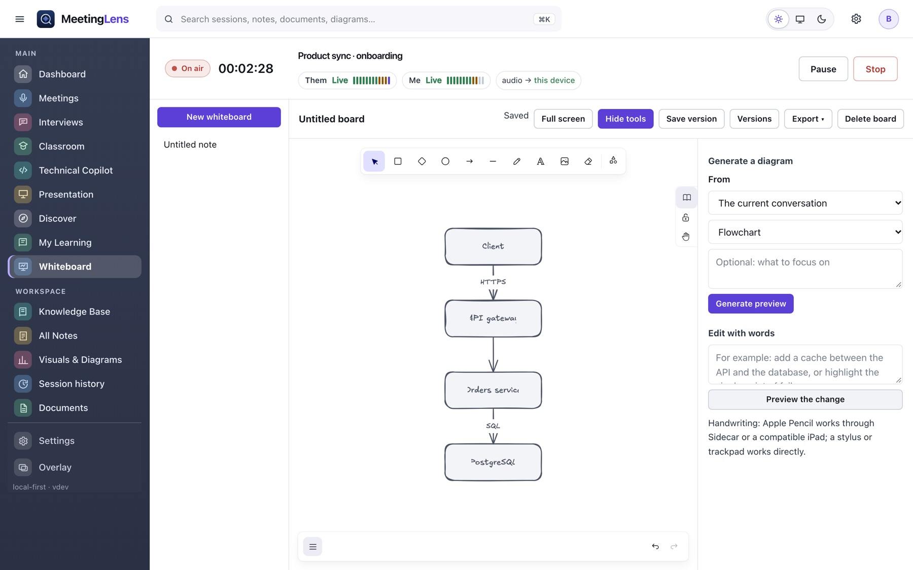
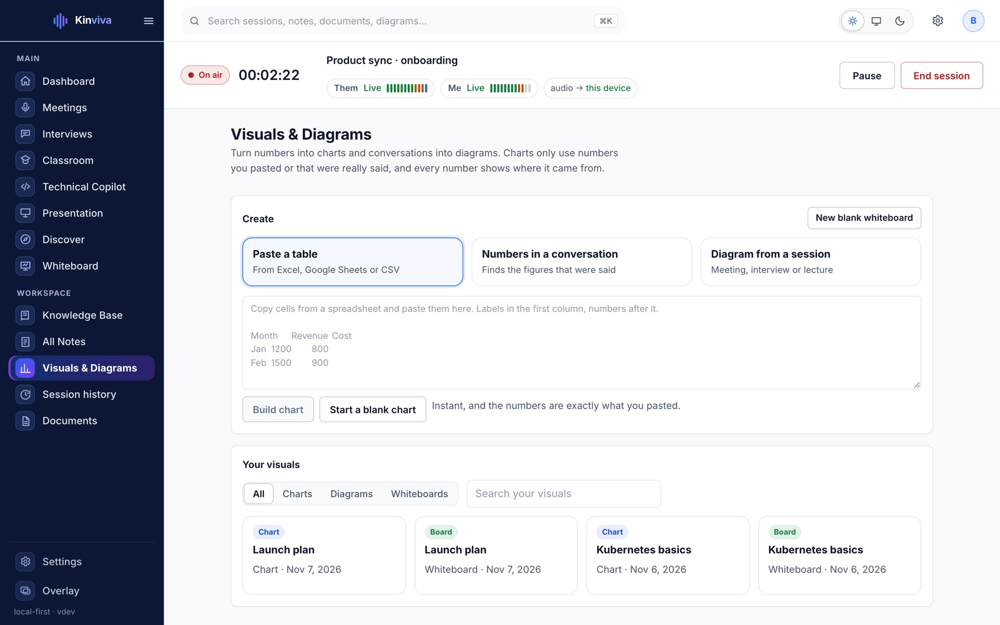

PNG and SVG
Clean images for documents and slides.
Whiteboard & charts
A real whiteboard, with diagrams drawn from your sessions. Edit them by hand or with a sentence, and never lose your own work.
The installer you can download today is 0.1.5, the first release named Kinviva (it was MeetingLens before). Features marked New in 0.1.5 were added since 0.1.4.
Whiteboard
New in 0.1.5Open Visuals & Diagrams, pick a live meeting, interview, lecture or saved session, and press one button. The diagram appears on a new board, ready to edit.

Edit with words
“Add a cache between the API and the database” or “highlight the single point of failure”.
Kinviva lists each change in plain words: add, rename, remove, connect, highlight or explain.
Only the targeted objects change. Your own drawings are never overwritten, and a version is saved first.
Charts
New in 0.1.5Build bar, line and pie charts from a conversation or text you paste. A number is marked as sourced only when it really appears in your material.

Clean images for documents and slides.
Save an .excalidraw file and open it elsewhere.
Copy a connected diagram as Mermaid source.
Thirty versions kept per board, saved before every automatic change.
Built on the open-source Excalidraw editor, Mermaid and Recharts. PDF export is not offered.
Download Kinviva for Mac or Windows. No account, no subscription.
Download Kinviva